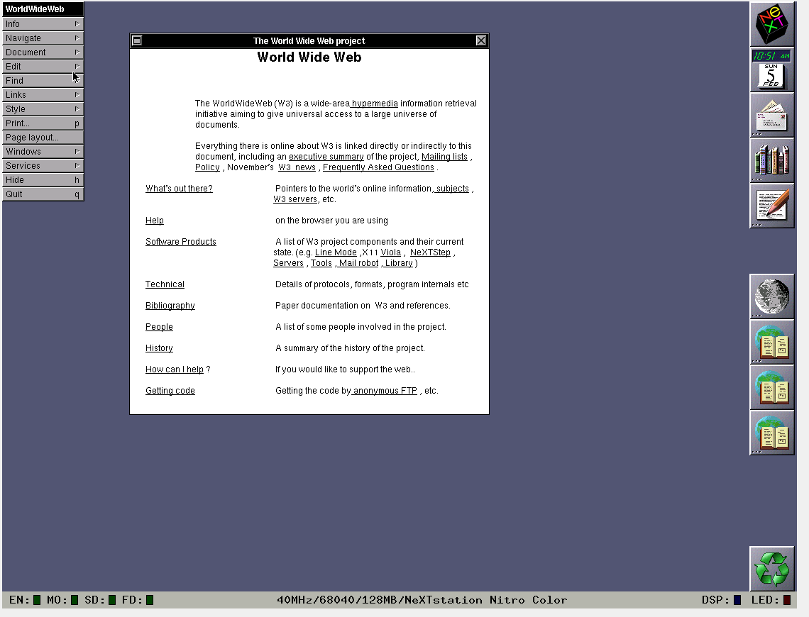

História da Web e da Internet
A Internet surgiu a partir da ARPANET nos anos 60, evoluindo até chegar à popularização na década de 90. A Web (World Wide Web) foi criada por Tim Berners-Lee em 1989 com o objetivo de compartilhar documentos científicos na CERN. HTML foi a linguagem criada para isso.
Resumo da História da Internet e da Web
No final da década de 1980, a rede mundial de computadores crescia rapidamente, especialmente em universidades e centros de pesquisa. Protocolos como TCP/IP já eram utilizados para comunicação entre máquinas, e o envio de e-mails dependia do conhecimento do endereço IP do destinatário ou do servidor de e-mail.
Em 1983, o DNS (Domain Name Server) surgiu para facilitar a resolução de nomes para endereços IP, tornando a navegação mais amigável. Ainda assim, não existiam sites ou navegadores, e a troca de arquivos era feita via FTP ou compartilhamento direto com permissões específicas.
Foi nesse cenário que Tim Berners-Lee, físico e programador do CERN, identificou a perda de informações como um grande problema. Para resolver isso, ele propôs a criação da Web — um sistema baseado em hipertexto, com o protocolo HTTP, documentos HTML e servidores capazes de responder a requisições.

“Um problema, porém, é a alta rotatividade de pessoas... Os detalhes técnicos de projetos anteriores às vezes são perdidos para sempre...”
— Tim Berners-Lee, 1989
Em 1991, Berners-Lee lançou o primeiro site do mundo e o navegador WWW Browser-Editor, desenvolvido em um computador NeXT. Em 1993, o CERN tornou a Web de domínio público e o navegador Mosaic popularizou seu uso.
Em 1994, foi fundado o W3C (World Wide Web Consortium), garantindo a padronização e evolução aberta da Web. A partir daí, ela cresceu exponencialmente e tornou-se uma das principais ferramentas de comunicação e compartilhamento de informação da humanidade.